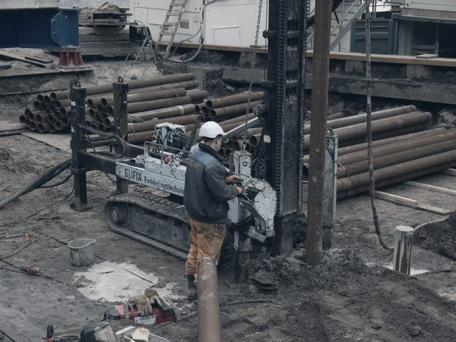
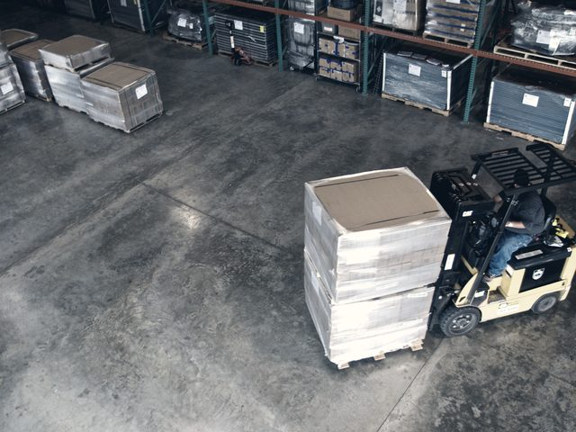
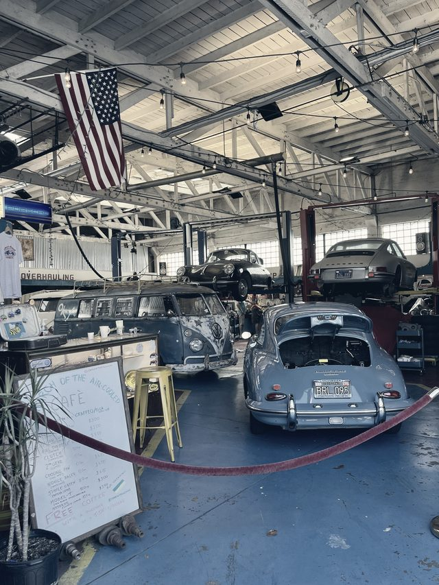

Obory, ve kterých začínáme
Začínáme u jedné konkrétní práce, která se opakuje a stojí peníze. U každého oboru níž je rozpis úloh, se kterými se u něj potkáváme nejčastěji, a verdikt ke každé z nich.
Rozpisy níž jsou modelové. U vás vypadají jinak, protože je sestavujeme z vaší agendy, ne z oboru.
Stavební firma
Peníze na stavbě mizí mezi tím, co parta udělá navíc, a tím, co se dostane do faktury. Tam začínáme.

- Vícepráce z místa do zakázky Parta to nadiktuje větou, ne formulářem. Někdo tomu musí rozumět. Potřebuje AI
- Porovnání víceprací s nabídkou Dva různě psané dokumenty a otázka, co v nich nesedí. Potřebuje AI
- Hlídání termínů revizí Datum a upozornění. Model by to jen prodražil. Automatizace
- Připomínka chybějícího zjišťovacího protokolu Seznam, termín, e-mail. Nic víc v tom není. Automatizace
- Přeposílání faktur účetní Pravidlo v e-mailu to dělá roky a funguje. Nepotřebujete nic
E-shop
Marži znáte na konci měsíce z účetnictví. Do té doby prodáváte poslepu.

- Marže proti nákupní ceně z faktur Nákupky chodí v PDF pokaždé jinak. Přečíst je umí model. Potřebuje AI
- Vyřízení vratky podle e-mailu zákazníka Nejdřív je potřeba pochopit, co zákazník vlastně chce. Potřebuje AI
- Sledování cen konkurence Stáhnout čísla a porovnat je. Žádné čtení v tom není. Automatizace
- Vystavení dobropisu Šablona a data, která již v systému máte. Automatizace
- Denní report tržeb Shoptet ho posílá sám. Nechte to být. Nepotřebujete nic
Účetní kancelář
Nejdražší hodina v kanceláři je ta, ve které někdo přepisuje údaje z cizího formuláře.
- Předkontace došlých dokladů Každý dodavatel posílá jiný formát. Přesně ten nepořádek, na který AI je. Potřebuje AI
- Vytažení údajů z bankovního výpisu Strukturovaný soubor. Stačí pravidla. Automatizace
- Připomenutí klientovi, že chybí doklad Seznam a termín. Automatizace
- Odpověď na dotaz klienta k DPH Za odpověď ručí člověk. Nechte to na sobě. Nepotřebujete nic
- Zveřejnění účetní závěrky Jednou ročně. Systém se na to nevyplatí. Nepotřebujete nic
Autoservis
Mechanik najde na voze víc, než bylo v objednávce. Než to sepíše, je konec směny.

- Zápis nálezu mechanika do zakázky Mechanik mluví, nepíše. Přepsat a pochopit to musí model. Potřebuje AI
- Podklad pro zákazníka z nálezu Vysvětlit laikovi, co se našlo a proč to spěchá. Potřebuje AI
- Připomínka blížící se STK Datum, které již v systému je. Automatizace
- Rozpis práce na týden Kapacita dílny proti otevřeným zakázkám. Automatizace
- Objednání dílu podle VIN Katalog dodavatele to umí lépe než my. Nepotřebujete nic
Váš obor tu není?
Obor nás nezajímá tolik jako to, kde se u vás hromadí papír. Napište, co vás nejvíc zdržuje, a rozpis vám sestavíme na míru.